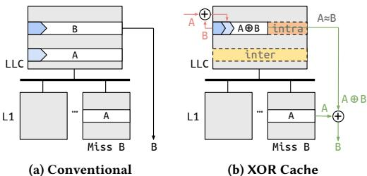
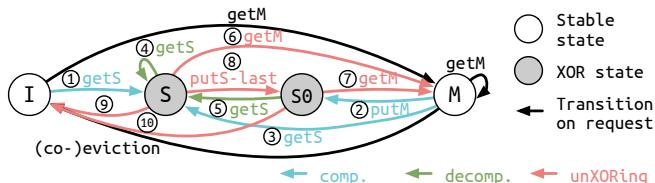
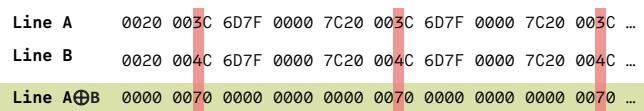
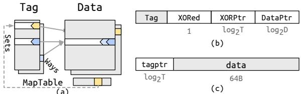
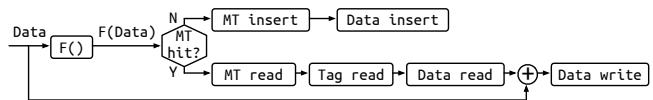
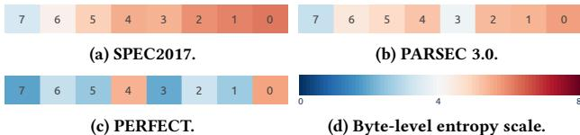
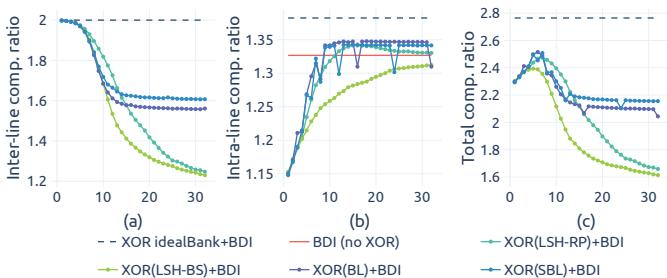
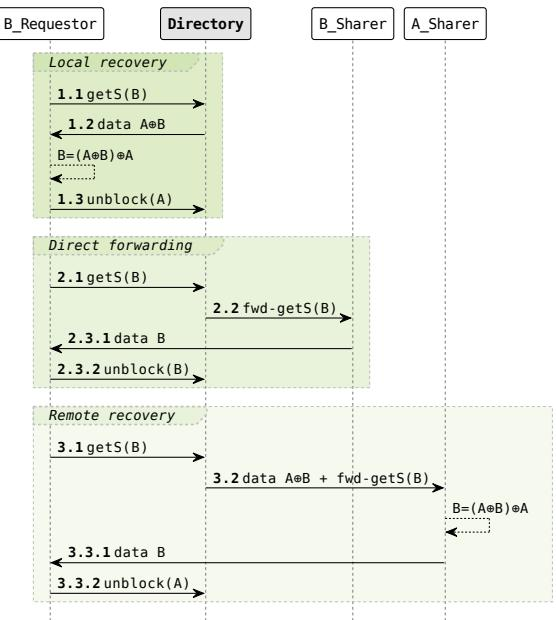
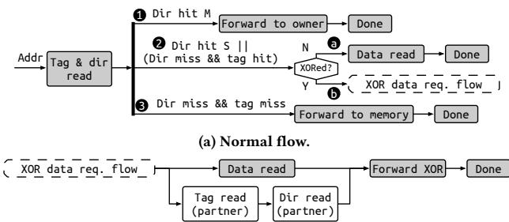

The XOR Cache: A Catalyst for Compression 通俗讲解#
0. 整体创新点通俗解读#
一句话抓住核心
- 这篇论文不是在“把单条 cache line 压得更小”这条老路上继续卷，而是换了个脑回路：既然 LLC 和 private cache 里本来就有大量重复数据，那就先把两条相关 line 用 XOR 合成一条，再拿这条“更稀疏、更容易压缩”的数据去做后续压缩。
- 所以它真正做的是两件事：
- inter-line compression：把两条线合成一条，直接省一份存储；
- intra-line compression catalyst：让合成后的数据更“像零”，从而让 BΔI / BPC / Thesaurus 这类压缩方案更好用。

Figure 1: High-level overview. Unlike a conventional cache, XOR Cache stores the bitwise XOR of line pairs.痛点直击（Why）
- 以前大家做 cache compression，主要盯着“单条 line 自己能不能压缩”，但这有个天然盲区：
- 很多冗余根本不在一条 line 内部，而是在不同 cache level 之间。
- inclusive LLC 会和 L1/L2 里重复存同样的数据，这部分重复过去通常被当成“无奈的代价”，不是“可利用资源”。
- 传统做法的难受点很明确：
- 空间浪费：LLC 被 private cache 的副本挤占，实际有效容量变小；
- 压缩收益不稳定：只靠单线内部的模式，碰到多程序混合负载时往往不够看；
- 压缩和一致性割裂：你想压缩得更激进，coherence 却会把 recoverability、sharer 管理、dirty/clean 状态这些问题一起扔回来。
- 这篇论文想解决的不是“小修小补”，而是一个更大的问题：
- 能不能把“跨层重复”和“同层压缩”这两种本来分开的收益，绑成一件事一起做？
通俗比方（Analogy）
- 你可以把 LLC 想成一个仓库，private caches 想成前台小柜台。
- 传统压缩像是在问：
- “这件货本身能不能折叠一下，少占点地方？”
- XOR Cache 的思路更像：
- “前台和仓库里经常摆着同一件货的重复副本，那我为什么不把两件差不多的货先做差，把共同部分抵消掉，再把剩下那点差异存起来？”
- 这就有点像：
- 两个很像的版本做 diff
- 或者 先做残差，再压缩残差
- 更直白一点：
- 普通压缩是在“原文”里找省略；
- XOR Cache 是先把两篇很像的文章做“相减”，把重复句子抵消掉，剩下的内容自然更短、更空、更容易压。

Figure 6: LLC transitions between stable states. I for Invalid; S for Shared; M for Modified; S0 is a special S state when the number of sharers is zero; compression, decompression, and unXORing edges are in blue, green, and red, respectively.关键一招（How）
- 作者并没有把 cache 结构彻底推翻，而是只改了一个非常聪明的环节：插入时的 pairing 方式。
- 具体来说：
- 以前插入一条 line，就是“找位置、直接放进去”；
- 现在插入时，作者先在同一 bank 里找一个合适的伙伴；
- 找到后不存两份原文，而是存 A ⊕ B。
- 这个动作的妙处在于：
- XOR 是自反的，所以恢复非常自然：
- 有 A 和 A⊕B，就能还原 B；
- 有 B 和 A⊕B，就能还原 A。
- 于是整个设计就变成了一个非常巧的结构：
- 存的时候，把两条线折叠成一条；
- 读的时候，再借助 private cache 里还在的那一条把它展开。
- 但真正难的不是 XOR 本身，而是“什么时候能安全地这么干”：
- 如果两条线都没了，就没法还原；
- 所以作者提出了 minimum sharer invariant：
- 被 XOR 的那一对里，至少得有一条在 higher-level cache 里还有 sharer。
- 这就是整篇论文最聪明的地方：
- 它不是暴力压缩，而是把压缩条件和一致性条件绑在一起设计；
- 不是单纯追求更高压缩比，而是让压缩可恢复、可一致、可实现。
作者真正替换掉的流程
- 传统流程：
- line 来了 → 直接存 → 以后再靠压缩算法看能不能缩小
- XOR Cache 的流程：
- line 来了 → 先找“可配对的冗余副本” → 先做 XOR 合并 → 再视情况叠加 BΔI/BPC/Thesaurus
- 这意味着它改变的不是“压缩算法本身”，而是压缩的入口姿势：
- 以前是“先原样存，再尽量压”；
- 现在是“先把冗余消掉，再去压残差”。
- 这就是为什么它能同时吃到两种收益：
- 少存一条线；
- 剩下那条更容易压缩。
它为什么看起来像个“催化器”
- 因为它本身不一定是最终压缩器，却能把别的压缩器推得更有效。
- 这点特别像化学里的 catalyst：
- 自己不一定是最后产物；
- 但它改变了反应路径，让后续压缩更容易发生。
- 论文里这件事的直观结果就是：
- XOR 后的数据 entropy 更低；
- BΔI、BPC、Thesaurus 这些方法更容易吃到“零多、模式规整”的数据。
这篇论文真正的新意，不在 XOR，而在“XOR + coherence + candidate selection”三件事拼成闭环
- XOR 只是编码手段
- candidate selection 决定能不能凑到“像的”两条线
- coherence protocol 决定这事能不能在真实 LLC 里跑通
- 没有 candidate selection，XOR 只是随机搅乱数据；
- 没有 coherence，XOR 之后的数据可能根本没法可靠恢复；
- 没有和其他 compression 叠加，收益会停留在“省一条线”这个层面，没法把潜力吃满。
效果上，作者证明它不是纸面技巧
| 指标 | 结果 |
|---|---|
| LLC area | 1.93× 更小 |
| LLC power | 1.92× 更低 |
| 性能开销 | 2.06% |
| EDP | 26.3% 更低 |
一句话总结
- 这篇论文的核心贡献，是把“跨层冗余”从 cache 体系里的副作用，改造成一种可编排的压缩资源。
- 它的巧妙之处不在于发明了更复杂的压缩编码，而在于：
- 先用 XOR 把两条线折叠成一条，
- 再借助 coherence 保证还能展开，
- 最后让原有压缩器在更低熵的数据上工作。
- 所以它真正解决的是：如何把“重复数据”从浪费变成压缩的燃料。
1. XOR 互线压缩机制#
- 痛点直击
- 传统 LLC 最大的浪费，不是“存得不够紧”，而是明明上层 private cache 里已经有一份，LLC 还得再存一份原样副本。
- 这在 inclusive cache hierarchy 里尤其难受：
- 容量被重复数据吃掉，effective capacity 变小。
- 面积和功耗 付了双份钱，却没换来双份收益。
- 你如果直接改成 exclusive，又会把 coherence 和数据回收流程搞复杂。
- 所以作者想解决的不是“再压缩一点”，而是一个更根本的问题：能不能利用层级之间本来就存在的重复，把重复本身变成压缩机会。
- 通俗比方
- 这很像你和同学共享一份讲义：
- 如果你们两个人都各自打印一整份，浪费纸。
- 更聪明的办法不是把每份讲义都再做一次 PDF 压缩，而是只保存两份讲义的差异。
- 只要其中一份原件还在手里，就能把“差异稿”还原回完整内容。
- XOR Cache 做的事就像这个逻辑：
- A 已经在 L1 里了
- 那么 LLC 里没必要再完整存 A
- 可以只存 A⊕B
- 以后如果要拿 B，只要把 A⊕B 再和 A 异或一次，就把 B 还原出来了
- 这不是“把两份东西揉成一团”，而是存一份可逆的差分表示。
你可以把它理解成一种“高维版的差分存储”，而 XOR 正好是最便宜、最对称的那把刀。
- 关键一招
- 作者没有重头发明一种复杂压缩码，而是做了一个非常巧的逻辑翻转：
- 传统 cache 的思路是：每条 line 自己压缩自己
- XOR Cache 的思路是：两条 line 先结成一对，再把“对之间的关系”存下来
- 具体替换掉的步骤是：
- 原来 LLC 插入一条 line 时，通常是“原样写入”或“单条内压缩”
- 现在变成：先找一个合适的 partner
- 然后把这两条 line 变成一个 XOR 结果
- LLC 里只存这个结果，相当于两条线共用一个物理槽
- 这个动作之所以成立，靠的是两个关键性质：
- XOR 是自反的：A⊕B 再和 A 异或，就能还原 B
- 上层缓存里往往已经有 A 或 B 的原件：因为 private caching 和 inclusion 让这个前提经常成立
- 所以它本质上不是“压缩算法”，而是一个跨层级的结构性重编码：
- 把“重复副本”改写成“可逆残差”
- 把“存两份”改成“存一份关系”
- 一句话抓住本质
- XOR 互线压缩的核心，不是让一条数据更小，而是利用 LLC 和 private cache 之间天然重复，把“两条完整数据”变成“一个可逆的差分项”，从而实现 2:1 inter-line compression。
- 你需要真正记住的直觉
- 这招省空间的前提，不是“数据好压缩”，而是系统里本来就有一份原件。
- 这招厉害的地方，也不只是省空间，而是它还能顺手把相似数据变得更容易做 intra-line compression。
- 所以它的角色不是普通压缩器，而更像一个 compression catalyst：
先用 XOR 把跨层重复收起来，再把剩下的残差喂给别的压缩器。
2. 协同式 XOR 候选选择策略#
痛点直击
- 这篇论文里最关键的矛盾不是“能不能 XOR”，而是“XOR 之后到底变得更省，还是更乱”。
- 如果你随便挑两个 line 去 XOR：
- 的确可能把 2 条 line 变成 1 条，拿到 inter-line compression 的收益；
- 但更常见的副作用是，XOR 结果像“随机噪声”，熵很高，反而让后面的 BΔI / BPC / Thesaurus 很难再压缩。
- 所以问题本质上是：
- 只追求“合并两条 line”会得到粗暴的节省；
- 只追求“后续压缩更强”又会牺牲XOR 覆盖率；
- 之前的随机策略就卡在这里：省了空间，却可能把数据结构搞坏。
- 这就是为什么作者要做 协同式 XOR 候选选择：不是找“任意伙伴”，而是找“xor 完还能继续压缩的伙伴”。
通俗比方
- 你可以把它想成“配对做拼图”。
- 普通 XOR policy 像是随手把两块拼图粘在一起，确实少了一块，但拼完后图案可能更乱。
- 协同式 XOR 候选选择像是：故意挑两块轮廓很像的拼图，让它们叠在一起后，重合部分被抵消掉，剩下的差异特别少。
- 结果就是：
- 原来两块各自都带着不少“颜色噪点”；
- 一 XOR，很多共同部分被抹掉；
- 剩下的内容更像“大片 0 + 少量变化”。
- 这对后续压缩器特别友好：
- BΔI 喜欢小范围变化；
- BPC 喜欢规则化、低熵数据；
- Thesaurus 也更容易把这种 line 当成“更像某个 centroid 的近亲”。
- 所以这个策略的直觉不是“XOR 本身更聪明”，而是：
- 先把两条相似数据做差分
- 再让传统压缩器去吃这个“差分后的残渣”
- 这样就像“先去杂质，再精炼”。

Figure 4: Two similar lines A and B from bodytrack benchmark in PAESEC3.0 suite. The XORed line $\mathbf { A } \oplus \mathbf { B }$ has low entropy.关键一招
- 作者没有重做一套全新的压缩算法，而是把 XOR 放进了原有压缩链路的前面。
- 以前的流程是：
- 直接把 line 交给 BΔI / BPC / Thesaurus。
- 现在的流程变成：
- 先在 同一个 bank 里找一个“值相似”的候选 line；
- 先做 XOR；
- 再把 XOR 后的数据交给原本的压缩器。
- 这个“中间插一脚”的动作很巧：
- XOR policy 决定配谁；
- 配得好，XOR 后数据熵下降，后续压缩率上升；
- 配得不好，只是多了一次运算，却没拿到协同收益。
- 所以这个策略的真正价值是：
- 它不是单纯优化 XOR；
- 而是在替后面的压缩器“挑原料”。
- 更准确地说，作者在做的是一种“双目标选配”：
- 目标1：尽量找到可 XOR 的伙伴，保证 inter-line 压缩有覆盖；
- 目标2：优先找“相似度高”的伙伴，让 XOR 后的 line 更容易被 BΔI/BPC/Thesaurus 吃掉。
- 论文里对应的直觉就是：
- randBank：能配就配，简单但粗糙；
- idealSet / idealBank：在局部或整个 bank 里找“最像的那一个”，协同最好，但代价更高。
- 所以“协同式 XOR 候选选择”的本质，是把 XOR 从“随缘合并”升级成“有意识地产生低熵中间表示”。
一句话抓住它
- 这不是在“压缩数据”，而是在“先制造更好压缩的数据”。
3. Map Table 近似哈希匹配#
痛点直击：为什么需要Map Table近似哈希匹配
- XOR Cache真正想找的不是“任意两条线”，而是“值长得像的两条线”。
- 如果只是随便把两条cache line做XOR，确实能把两条线塞进一个物理槽，得到inter-line compression。
- 但随便XOR出来的数据可能仍然很乱，后面的BΔI、BPC这类intra-line compression不一定压得动。
- 论文真正想要的是：
- 两条原始线A≈B；
- 那么A⊕B会变成大量0和少量差异位；
- 这时再交给BΔI之类压缩器，压缩率会明显变高。
- 难受点在于：找“相似线”这件事如果认真做，会贵得离谱。
- 最理想的做法是idealBank：
- 新插入一条line时，和整个LLC bank里的所有line都试一遍；
- 找出XOR后最容易压缩的那个候选。
- 这在概念上很美，但硬件上很痛苦：
- 要读大量cache line；
- 要做大量XOR；
- 还要跑压缩评估；
- 插入路径会变慢，能耗和面积也不可接受。
- idealSet便宜一点，只在同一个set里找，但候选太少，经常找不到真正相似的line。
- 所以问题不是“能不能压缩”，而是“能不能用很便宜的方式找到一个大概率相似的候选”。
- 传统压缩器关注的是：
- “这条line自己有没有规律？”
- XOR Cache要解决的是：
- “有没有另一条line，和它配对后能制造规律？”
- Map Table近似哈希匹配就是为这个问题服务的：用一个很小的索引结构，快速猜出“谁可能和我像”。

Figure 8: XOR Cache organization. a) Decoupled tag-data store and map table; b) Tag entry; c) Data entry; Grey blocks are identical to the uncompressed baseline; T is the number of tag entries; D is the number of data entries.通俗比方：Map Table像“按气味找搭子”的储物柜
- 可以把LLC里的cache line想象成一堆衣服。
- XOR Cache想把两件衣服叠在一起收纳。
- 如果两件衣服颜色、纹理很像，叠起来后差异很少，很容易进一步压缩。
- 如果一件红毛衣和一件花衬衫硬叠，虽然也能叠，但后续整理并不会更省空间。
- idealBank像是每来一件新衣服，就把整个仓库翻一遍。
- 优点：
- 一定能找到最像的那件。
- 缺点：
- 太慢；
- 太费电；
- 硬件实现不现实。
- Map Table像是在仓库门口放了一个“气味标签柜”。
- 每件衣服进来时，不直接和所有衣服比较。
- 而是先闻一下它的“气味”，生成一个短标签，也就是map value。
- 再去这个标签对应的小格子里看：
- 如果里面已经有一件衣服，说明它们“气味相近”，可以尝试配对；
- 如果没有，就把当前衣服的指针放进去，等后面相似的衣服来。
- 这个比方里：
- map function就是“闻气味”的方法。
- map value就是“气味标签”。
- map table就是“按气味分格子的候选登记表”。
- 表里不存整件衣服，只存tag pointer，也就是“候选在哪里”。
- 关键直觉是：
- Map Table不保证找到最像的，只保证便宜地找到一个可能像的。
- 它追求的不是完美匹配，而是硬件上可接受的近似匹配。
- 这正是体系结构设计里常见的取舍：
- 少一点最优性；
- 换来极低的查找成本；
- 最后整体收益反而更好。
关键一招：把“全局相似性搜索”替换成“短签名碰撞”
- 作者没有让新line去和整个bank逐个比较。
- 那样等于做一个昂贵的相似度搜索。
- 硬件里这类操作非常不友好。
- 作者巧妙地在插入流程前面插了一个map function。
- 新line进入LLC时，先被map function处理。
- map function提取这条line的某种粗略特征。
- 这个特征被压成一个很短的map value。
- 之后只访问map table里对应的一个entry。
- 原来的逻辑是：
- “我要找和这条line最像的候选，所以我要比较很多line。”
- 被扭转后的逻辑是：
- “如果两条line真的像，那它们应该产生相同或接近的map value。”
- “那我只要去map table里看这个map value对应的位置有没有候选。”
- 插入流程可以理解成下面这样：
| 步骤 | 操作 | 直觉 |
|---|---|---|
| 1 | 对新line应用map function | 给line生成一个“相似性签名” |
| 2 | 得到map value | 用短标签代表粗略数据形态 |
| 3 | 查map table | 看有没有同类候选 |
| 4 | 如果命中 | 读取候选line，执行XOR compression |
| 5 | 如果未命中 | 当前line作为standalone line登记进map table |
| 6 | 配对成功后 | 清除或更新map table entry，避免重复使用 |

Figure 11: Insertion flow (off critical path). F() denotes the map function.- 这里最巧妙的地方在于：
- map table里存的不是数据本身，而是候选line的tag pointer。
- 所以它很小。
- 它只是帮cache controller快速定位“可能值得XOR的对象”。
- 真正的数据仍然在data array里。
- 这相当于把一个昂贵问题：
- “在整个LLC bank里找最相似的cache line。”
- 变成一个便宜问题：
- “算一个短hash，然后查一个小表。”
为什么叫近似哈希，而不是普通哈希
- 普通hash通常追求：
- 不同输入尽量分散；
- 避免collision；
- 用于快速定位唯一对象。
- XOR Cache这里反而希望某些collision发生。
- 如果两条line“形态相似”，就希望它们落到同一个map table entry。
- 这种collision不是错误，而是机会。
- 因为collision意味着：
- “这两条line可能值得尝试XOR。”
- 所以它更像Locality-Sensitive Hashing，LSH的思想：
- 相似的数据更容易映射到相同或相关的桶里。
- 不相似的数据尽量不要挤在一起。
- 但它不追求软件算法里的复杂相似搜索，而是硬件友好的简化版本。
- 论文比较了几类map function：
- LSH-RP：基于random projection。
- LSH-BS：基于bit sampling。
- BL：byte labeling，判断每个byte是否为0。
- SBL：sparse byte labeling，只看更有用的高位byte，避开低位高熵噪声。
- 其中SBL的直觉很漂亮：
- 很多程序数据的低位byte变化大，噪声多。
- 高位byte更能反映数据结构和数值范围。
- 所以不要把所有byte都拿来生成签名。
- 有选择地看高位byte，反而更容易找到真正相似的line。

Figure 9: Average byte-level entropy per 8-byte word.Map Value位数的核心取舍：覆盖率 vs 准确率
- map value太短：
- 桶很少；
- 很多line会撞到同一个entry；
- 候选很容易找到；
- 但候选可能并不真的相似。
- 结果是：
- inter-line compression覆盖率高；
- intra-line compression收益差。
- map value太长：
- 桶很多；
- collision变少；
- 一旦命中，候选更可能真的相似；
- 但经常找不到候选。
- 结果是：
- 候选准确率高；
- XOR配对机会少。
- 论文里的结论是：
- 对BL/SBL来说，约7-bit map value是比较好的甜点。
- 它在“容易找到候选”和“候选真的相似”之间取得平衡。
- 最终XOR+BΔI能达到约2.5×平均压缩率，因此作者用2.5×更小的数据阵列来设计XOR Cache。

Figure 12: Comp. ratio with four map functions (Section 5.1.3). (a) inter-line comp. ratio; (b) intra-line comp. ratio; (c) total comp. ratio. The $\mathbf { x }$ -axis is the number of map value bits.| map value位数 | 候选覆盖率 | 候选相似度 | 总体效果 |
|---|---|---|---|
| 很少 | 高 | 低 | 容易配对，但XOR后不一定好压 |
| 适中 | 中高 | 中高 | 最佳平衡点 |
| 很多 | 低 | 高 | 候选质量高，但经常无候选 |
一句话抓住本质
- Map Table近似哈希匹配的本质是：
- 作者没有做昂贵的全cache相似性搜索；
- 而是用一个硬件友好的短签名，把“找相似line”变成“查一个可能相似的候选指针”；
- 牺牲一点最优性，换来足够好的配对质量和极低的查找成本。
- 更直白地说：
- 它不是在认真比对每个人的脸，而是先按身高、衣服颜色、轮廓分组；同组的人不一定最像，但大概率比随机抓一个更像。
- 对XOR Cache来说，这就够了。
- 因为它要的不是完美搭子，而是能让A⊕B变得更稀疏、更好压的“足够相似的搭子”。
4. 一致性协议与最小共享者不变量#
痛点直击
- 这套设计最难受的地方，不是“怎么把数据压小”，而是“压小之后还能不能稳稳地还原回来”。
- 普通 cache coherence 只要保证“谁该有这条线，谁不该有这条线”，逻辑就够了；但 XOR Cache 不一样：
- LLC 里存的不是原始线，而是 A⊕B
- 你要想拿回 B，必须还能找到 A
- 问题就来了：
- 如果 A 和 B 都在上层缓存里消失了
- LLC 里只剩下 A⊕B
- 那它就变成一坨“看起来像数据、实际上无法单独解释”的东西
- 所以作者真正要解决的不是“压缩率”，而是一个更硬的底线问题：压缩不能把可恢复性压没了。
- 这就是 minimum sharer invariant 的意义：
- XOR 对里的两条线，至少要有一条还在上层 private cache 中被共享
- 只要还有一个“锚点”，LLC 里的 XOR 值就能被拆回来
- 这也是为什么论文里要把一致性协议重新设计，而不是直接套一个现成的 cache compression 框架。
通俗比方
- 你可以把 XOR Cache 想成“两个人共用一把钥匙，但钥匙本身不是完整的，必须拿其中一个人的原件去拼回来”。
- 普通 cache 压缩像是把一件衣服折小了收起来，拿出来还能直接穿。
- XOR Cache 更像是：
- 把两份文件做了一个“差分包”
- 这个差分包本身不能独立阅读
- 必须配合至少一份原文，才能还原另一份
- 所以 minimum sharer invariant 就像一个保底规则：
- 你可以把两份材料做差分
- 但不能把“原始底稿”全都扔掉
- 一致性协议在这里的角色，不是传统意义上的“管谁能读谁能写”那么简单，而是一个 保管员：
- 它负责记住谁还持有“底稿”
- 一旦底稿快没了，就赶紧把 XOR 对拆开
- 类比成生活就是：
- 你把两份相近的账本做了“差额记账”
- 但账差表能成立的前提，是至少还有一本原账没丢
- 如果两本原账都没了，差额表就变成废纸
关键一招
- 作者没有重新发明一种全新的 coherence，而是把原来的 MSI 改造成一个“为恢复性服务”的协议。
- 核心动作就两步：
- 第一步：让目录知道谁还活着
- 他们要求 精确 sharer tracking
- 也就是不能再偷懒用不完整目录、不能 silent eviction
- 因为系统必须准确知道：某条 XOR 线的“另一半”到底还有没有上层持有者
- 这就是为什么他们坚持 explicit eviction notification 和 explicit upgrade notification
- 第二步：一旦要违背不变量，就立刻 unXOR
- 如果某条线要升级成 Modified
- 或者它是最后一个 sharer，要从 S 掉到 S0
- 或者发生 eviction
- 协议就不再允许它继续挂在 XOR 对里
- 而是先把 A⊕B 拆回 A 和 B，再让其中该离开的离开，该写回的写回
- 所以作者并不是“把 cache 压缩后再想办法修补一致性”，而是反过来：
- 先把 recoverability 写进协议规则
- 再允许 XOR 压缩存在
- 这就是它最巧妙的地方：
- XOR 本身只是一个编码技巧
- 真正让它可用的是 coherence 负责保底
- minimum sharer invariant 就是这个保底机制的核心约束
一句话抓住本质
- 传统 cache coherence 关心的是“数据对不对”
- XOR Cache 的 coherence 还要额外关心“这份压缩数据以后还能不能被拆开”
- 所以 minimum sharer invariant 本质上是一个“让压缩不越界”的安全绳：只要还能恢复，就继续压；一旦快恢复不了，就先拆开再说
你可以把它记成一个判断规则
- 能继续 XOR 的前提：
- 至少一条原始线仍在上层 cache 中可追踪
- 不能继续 XOR 的信号：
- 最后一个 sharer 要消失
- 其中一条要变脏并升级到 M
- 目录已经无法保证另一半还活着
- 这时协议的动作不是“硬撑着继续存 XOR”，而是：
- 先 unXOR
- 再进入正常 MSI 流程
直觉总结
- 这套设计的精髓不是“把两条线绑在一起”，而是“绑在一起以后，必须始终留一个活口”。
- minimum sharer invariant 就是这个活口规则。
- 没有它，XOR 只是漂亮的压缩；有了它，XOR 才变成能落地的 cache 机制。
5. Decompression 与远程/本地转发机制#
1.痛点直击：为什么Decompression会变麻烦
- XOR Cache最反直觉的地方在于：LLC里命中了，但LLC并不一定有你要的原始数据。
- 传统LLC命中：
- 你要B
- LLC里存的就是B
- 直接读出来返回
- XOR Cache命中：
- 你要B
- LLC里可能存的是A⊕B
- 单靠LLC自己，无法还原B
- 必须再找到A或B的某个原始副本
- 这就是Decompression的核心痛点：
- 命中不等于可直接服务
- LLC命中的是一个混合物
- 解压需要一个“钥匙”
- 若有A⊕B，再拿到A，就能还原B
- 若有A⊕B，再拿到B，也能还原A
- 更难受的是，这个“钥匙”不在LLC，而在private cache里。
- XOR Cache故意利用inclusive/private caching redundancy
- 因为某些line已经在L1/L2里有副本，所以LLC不再完整保存它们
- 这带来压缩收益，但也带来一个新问题：
- LLC需要问private cache借数据，才能完成解压
- 这和传统cache压缩不一样。
- BΔI、BPC这类intra-line compression：
- compressed data和decompressor都在LLC侧
- LLC自己能解压
- XOR Cache：
- 解压依赖另一个cache line的原始副本
- 原始副本可能在某个private cache里
- 所以Decompression变成了一个coherence-assisted data forwarding问题
- 换句话说，作者把一个“数据解压问题”变成了一个“在cache hierarchy里找谁帮忙还原”的问题。
- 这就是为什么论文要专门设计local recovery、direct forwarding、remote recovery
- 它们本质上是在回答同一个问题：
- 谁手里有足够的信息，可以最快把B交给requestor？

Figure 7: Three forwarding cases when A and B are XORed. From top to bottom are local recovery, direct forwarding, and remote recovery.2.通俗比方：这像“拼图碎片寄存在朋友家”
- 可以把A⊕B想成一张“差分合成票据”。
- LLC没有完整保存A
- LLC也没有完整保存B
- LLC只保存了一张票据：A和B混在一起后的结果
- 要恢复B，你必须再拿到A
- 要恢复A，你必须再拿到B
- 生活类比：
- 你和朋友各有一份文件A和B
- 为了省仓库空间，仓库不存两份完整文件
- 仓库只存一份“差异包”A⊕B
- 现在有人要文件B
- 仓库就要看：
- 请求者自己有没有A
- 有没有其他人已经有B
- 如果都不行，有没有其他人有A，可以帮忙用A⊕B还原出B
- 三种Decompression路径就是三种“找人帮忙”的方式：
| 机制 | 直觉理解 | 谁完成恢复 | 代价 |
|---|---|---|---|
| local recovery | requestor自己手里已经有钥匙A | requestor本地做XOR | 最便宜 |
| direct forwarding | 别的private cache已经有现成的B | B的sharer直接转发B | 像普通cache-to-cache forwarding |
| remote recovery | requestor没有A，也没人有B，但有人有A | A的sharer远程用A⊕B还原B | 最贵 |
- 这个Mental Model很重要：
- local recovery像“我自己有钥匙，仓库把锁箱给我，我自己打开”
- direct forwarding像“别人已经有我要的文件，直接复印给我”
- remote recovery像“别人没有我要的文件，但他有钥匙；仓库把锁箱寄给他，让他打开后再寄给我”
- 所以这不是单纯的“LLC解压”。
- 更准确地说，这是一次分布式解压
- LLC提供A⊕B
- private cache提供A或B
- coherence protocol负责把请求导向正确的人
3.关键一招：作者把“LLC独立解压”替换成“coherence-guided forwarding解压”
- 作者最巧妙的逻辑转换是：
- 传统思路：
- 压缩数据在LLC
- 解压也应该在LLC完成
- XOR Cache的思路：
- LLC不必独自完成解压
- 既然private cache天然保存了一些副本，就让private cache参与解压
- 换句话说，作者没有给LLC塞一个复杂decompressor。
- 作者只是让LLC在命中XORed line时，多做一个判断：
- partner line是谁？
- requestor有没有partner？
- requested line还有没有sharer？
- partner line还有没有sharer？
- 然后根据这些状态选择最便宜的数据路径。
- 具体流程可以压缩成一句话：
- LLC命中A⊕B后，不急着自己解压，而是查sharer状态，决定把A⊕B或请求转发给最合适的private cache，让它用已有副本完成恢复。
- 三条路径的关键判断如下：
| 情况 | 条件 | LLC发送什么 | 最终怎么得到B |
|---|---|---|---|
| local recovery | requestor已经share了A | LLC把A⊕B发给requestor | requestor本地计算得到B |
| direct forwarding | 某个cache已经share了B | LLC把请求转发给B的sharer | B的sharer直接返回B |
| remote recovery | requestor没有A，且B没有sharer，但A有sharer | LLC把A⊕B和请求发给A的sharer | A的sharer恢复B后转发给requestor |
- local recovery是最漂亮的情况。
- requestor本来就有A
- LLC只需要把A⊕B送过去
- requestor做一次XOR：
- 用已有的A
- 解出缺失的B
- 这相当于把解压延迟压到最低
- 也是XOR Cache最希望碰到的情况
- direct forwarding其实是“绕开XOR”。
- 如果系统里已经有人有B
- 那就没必要用A⊕B还原
- 直接让B的sharer把B发给requestor
- 这说明XOR Cache并不执着于“凡事都XOR解压”
- 它真正追求的是：
- 谁最快能给出原始B，就找谁
- remote recovery是兜底方案，也是最能体现coherence设计复杂度的地方。
- requestor没有A
- 没有人有现成的B
- 但根据minimum sharer invariant，至少有人还持有A
- LLC把A⊕B送到A的sharer那里
- A的sharer用自己的A解出B
- 再把B发给requestor
- 这条路径多了一跳，所以慢一些，但保证了正确性和可恢复性
- 这里的minimum sharer invariant是整个机制能站住的底线。
- 一个XORed pair能保持压缩，前提是：
- A或B至少有一个仍然存在于private cache
- 否则LLC只有A⊕B
- 系统里没有A
- 也没有B
- 那就彻底无法还原
- 所以当最后一个sharer要消失，或者line要进入Modified状态时，系统必须先unXORing
- 这也是为什么Decompression和coherence protocol绑得这么紧。
- XOR Cache不是简单的数据编码技巧
- 它是在利用cache coherence已经维护的sharer信息
- 把sharer list从“谁有副本”升级成“谁能帮我解压”的索引

(b) XOR Cache flow. Forward XOR refers to the forwarding cases in Table 2. Figure 10: Data request flow. The critical path is in grey.一句话抓住本质
- XOR Cache的Decompression不是LLC把压缩块还原，而是LLC根据coherence状态调度private cache协作还原。
- local recovery利用requestor已有的partner line。
- direct forwarding利用别人已有的目标line。
- remote recovery利用别人已有的partner line。
- 这套机制的妙处在于：
- 压缩收益来自private cache里的冗余副本
- 解压能力也来自这些冗余副本
- 作者把原本被视为浪费的inclusion redundancy，变成了压缩和解压共同依赖的资源。
6. unXORing 与死锁规避实现#
核心观点
- 这个机制解决的不是“怎么压缩”，而是怎么在压缩后还不把自己锁死。
- XOR 把两条线绑成一对后，收益很大，但副作用也很直接：
- 只要其中一条线要变脏、最后一个 sharer 退出，或者要被 eviction，这对数据就可能马上变成不可恢复。
- 所以作者加了一个“拆包动作”——unXORing：
- 在风险出现之前，先把
A⊕B还原回 A 和 B； - 这样后面哪怕其中一条线状态变化，也不会把另一条线一起拖进黑洞。
痛点直击（Why）
- XOR Cache 的本质是：一条 LLC 里存的不是原始线，而是两条线的 XOR 结果。
- 这带来一个非常现实的问题：
- 只要这两条线里有一条要从“可恢复”变成“不可依赖”，另一条就可能再也找不回来了。
- 典型触发点有三个：
- getM / upgrade 到 Modified
- 说明这条线要被写了，原来的 LLC 里的 XOR 结果马上可能过期。
- 最后一个 sharer 离开
- 说明这条线在 private cache 里的“备份”没了；
- 如果还继续 XOR 挂着，恢复链条就断了。
- eviction
- 这条线要被踢出去了，XOR 对如果不提前拆开，另一条线也可能被连坐。
- 所以 unXORing 不是“额外优化”，而是保命机制：
- 它保证minimum sharer invariant，也就是至少得有一条线还能被找回来。
通俗比方（Analogy）
- 你可以把 XOR pair 想成两个人共用一把“组合保险箱钥匙”：
- 保险箱里不是各自的原件，而是两个人信息混在一起的密文。
- 只要两个人都还在，问题不大；
- 但如果其中一个人要：
- 改密码，
- 搬走，
- 或者直接退场，
- 那你就不能继续把两人的信息绑在一起了，必须先把原件拆出来，分别存好。
- 否则后面你想找回其中一个人的信息，就得先找到另一个人；
- 可另一个人可能正好也在等第一个人配合，结果就会变成互相等、谁也不动。
- 这就是作者必须认真处理的点：
- 压缩带来的不是纯收益，而是“引用关系”的复杂化。
关键一招（How）
- 作者没有试图让 XOR 对“永远不拆”，而是做了一个很聪明的逻辑转换：
- 平时压着存，危险来了就先拆开再说。
- 具体做法是：
- 当某条线触发 getM、最后 putS 或 eviction 时，
- LLC 不直接放任它继续保持 XOR 状态，
- 而是发起一个特殊的 write-back request，把原始数据从 private cache 拉回来，
- 然后在 LLC 侧完成 unXORing，恢复成两条独立线。
- 这里最巧妙的地方是：
- 如果触发 unXORing 的那条线是 S 状态，那就直接向它自己的 sharer 要数据；
- 如果它已经是 S0，也就是自己已经没有 sharer 了，
- 那就让它的 XOR 伙伴 A 临时当“代理人”，
- 去找 A 的 sharer 把 B 还原出来。
- 也就是说，作者并没有把“恢复原值”这件事硬塞进普通读写流程里，
- 而是单独设计了一条拆包通道，专门处理“快要失去可恢复性”的时刻。
为什么不会死锁
- 这里最容易出事的地方是：
- B 的请求要去触发 A 的动作。
- 这就像：
- 你来找我修东西，
- 结果我得先叫第三个人把工具送来，
- 第三个人又可能卡在别的请求上，
- 一层套一层，就可能形成循环等待。
- 作者的处理非常克制：
- private cache controller 用 unblocking 方式
- 私有缓存不会因为这个流程一直卡住。
- LLC controller 用 blocking 方式，但只让 LLC-bound 请求阻塞
- 这样阻塞面被限制得很窄。
- A 的 sharer 返回的 write-back response 不能被别的非 LLC-bound 请求挡住
- 这就切断了“绕一圈再卡回去”的可能。
- 直白点说：
- 作者不是试图消灭等待；
- 而是把等待限定在一个单向、可收敛的方向里，
- 让请求只能沿着固定路径往前走，不能原地打转。
为什么不需要额外 VN
- 很多 coherence 协议为了防死锁，会加新的 virtual network (VN)。
- 这篇工作很漂亮的一点是：
- 它证明了不用额外加 VN。
- 原因是：
- 他们已经把消息类型分得足够清楚；
- 关键的 LLC-bound request 和对应的 write-back response，
- 在现有 VN 划分下已经不会混到同一个容易互锁的通道里。
- 结果就是：
- 协议复杂了，
- 但网络结构不用额外膨胀；
- 这点很重要，因为一旦为了防死锁不断加 VN，系统实现成本会迅速上升。
一句话抓住本质
- unXORing 不是压缩算法的附属动作，而是 XOR Cache 的“安全阀”；
- 死锁规避 不是靠更多资源，而是靠把依赖关系设计成单向、可终止、可证明。
你可以这样理解它的设计哲学
- 传统压缩：尽量把数据塞小。
- XOR Cache：不仅要把数据塞小，还要保证塞进去之后还能随时安全拆开。
- 所以它真正做的是：
- 把“压缩状态”设计成一种可撤销的临时绑定关系，
- 而不是永久绑定。
- 这就是它最核心的工程智慧。